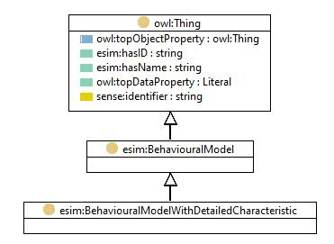

http://org.fhg.iis.eas.eee.esim/ESIMonto#BehaviouralModelWithDetailedCharacteristic
Class 'Behavioural model with detailed characteristic'

type
Class [owl:Class]
label
Behavioural model with detailed characteristic
subClassOf
Behavioural model
References
as range (
has detailed behaviour model
)
as subClassOf (
Behavioural model energy transformation facility [esim:DetailedBehaviouralModelEnergyTransformationFacility]
,
Behavioural model energy storage [esim:DetailedBehaviouralModelEnergyStorage]
,
Behavioural model energy distribution system [esim:DetailedBehaviouralModelEnergyDistributionSystem]
,
Behavioural model energy consumption usage [esim:DetailedBehaviouralModelEnergyConsumptionUsage]
,
Behaviour model energy source
)
Generated with
TopBraid Composer
by
TopQuadrant, Inc.